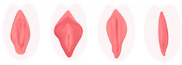

Grandes e Pequenos Lábios

A estrutura genitália externa contém em si o monte púbico que é uma elevação entre o abdome e o pudendo feminino, possui gordura e é coberto por pelos. É constituída também por grandes e pequenos lábios, os lábios maiores são dobras grossas de pele que se abrem desde a região do púbis até próximo ao anus, e os lábios menores são encontrados entre as dobras dos lábios maiores, determinam a entrada da vagina e ajuda também na sua proteção. Esta região cobre as demais partes da área externa, como clitóris e vestíbulo vaginal.